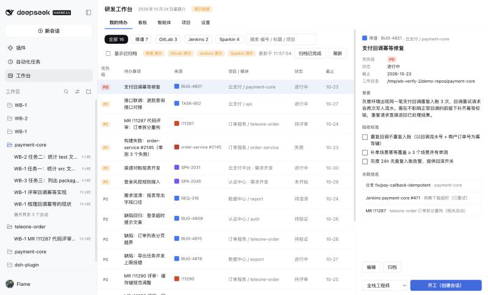
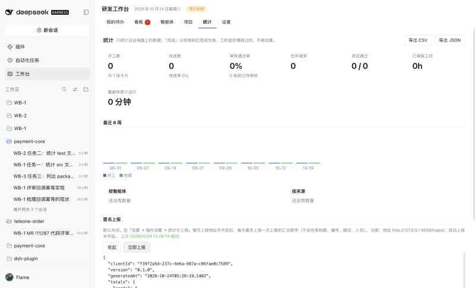
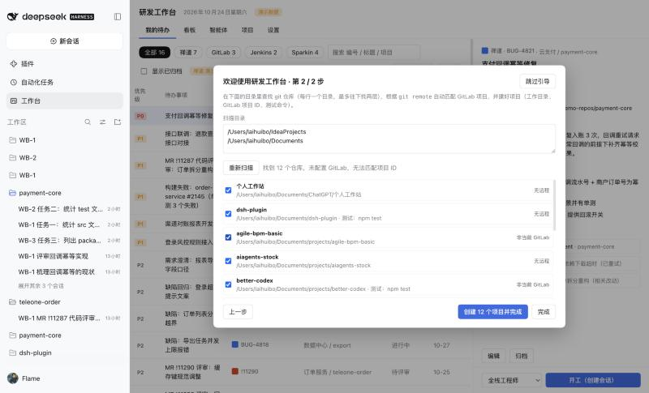

<title>研发工作台</title>
<meta name="claude:viewport-fit-sides" content="cover">
<link rel="preconnect" href="https://fonts.googleapis.com">
<link rel="preconnect" href="https://fonts.gstatic.com" crossorigin>
<link rel="stylesheet" href="https://fonts.googleapis.com/css2?family=JetBrains+Mono:wght@400;600&display=swap">
<style>
/* 版式：看板语言。卡片编号做眉题，六种卡片状态色贯穿全页，「人工闸门」是唯一的强调形态。 */
:root {
  --bg: #f3f5f8; --surface: #ffffff; --sunk: #e9edf3; --fg: #121722; --muted: #566074; --line: #d8dee7;
  --accent: #2f54d8; --accent-ink: #ffffff; --accent-soft: #e5ebff;
  --st-plan: #8a93a5; --st-run: #c97808; --st-review: #12895a; --st-done: #2f54d8; --st-block: #cc3a3a;
  --src-zentao: #3b6fe0; --src-gitlab: #dd5426; --src-jenkins: #b03e2e; --src-sparkin: #7650d2;
  --hand: #b4472f; --hand-soft: #fbe9e4; --draft: #12895a; --draft-soft: #e2f4ec;
  --shadow: 0 1px 2px rgba(18, 23, 34, .05), 0 10px 30px rgba(18, 23, 34, .08);
  --sans: "PingFang SC", "Hiragino Sans GB", "Microsoft YaHei", "Noto Sans SC", system-ui, sans-serif;
  --mono: "JetBrains Mono", ui-monospace, "SF Mono", Menlo, Consolas, monospace;
}
@media (prefers-color-scheme: dark) {
  :root:not([data-theme="light"]) {
    --bg: #0e1117; --surface: #161a22; --sunk: #1d222c; --fg: #e6e9ef; --muted: #9aa3b5; --line: #2a313d;
    --accent: #7f98ff; --accent-ink: #0e1117; --accent-soft: #1e2847;
    --st-plan: #7f889a; --st-run: #f0a237; --st-review: #3cc488; --st-done: #7f98ff; --st-block: #f06a6a;
    --src-zentao: #6f95f2; --src-gitlab: #f0794f; --src-jenkins: #e0705e; --src-sparkin: #a587f0;
    --hand: #f08a6e; --hand-soft: #3a211b; --draft: #3cc488; --draft-soft: #15301f;
    --shadow: 0 1px 2px rgba(0, 0, 0, .3), 0 10px 30px rgba(0, 0, 0, .35);
    color-scheme: dark;
  }
}
:root[data-theme="dark"] {
  --bg: #0e1117; --surface: #161a22; --sunk: #1d222c; --fg: #e6e9ef; --muted: #9aa3b5; --line: #2a313d;
  --accent: #7f98ff; --accent-ink: #0e1117; --accent-soft: #1e2847;
  --st-plan: #7f889a; --st-run: #f0a237; --st-review: #3cc488; --st-done: #7f98ff; --st-block: #f06a6a;
  --src-zentao: #6f95f2; --src-gitlab: #f0794f; --src-jenkins: #e0705e; --src-sparkin: #a587f0;
  --hand: #f08a6e; --hand-soft: #3a211b; --draft: #3cc488; --draft-soft: #15301f;
  --shadow: 0 1px 2px rgba(0, 0, 0, .3), 0 10px 30px rgba(0, 0, 0, .35);
  color-scheme: dark;
}

* { box-sizing: border-box; }
[hidden] { display: none !important; }
html { scroll-behavior: smooth; scroll-padding-top: 72px; }
@media (prefers-reduced-motion: reduce) { html { scroll-behavior: auto; } * { transition: none !important; } }
body { background: var(--bg); color: var(--fg); font: 15px/1.7 var(--sans); -webkit-font-smoothing: antialiased; }
body::before { content: ""; position: fixed; inset: 0 0 auto; height: env(safe-area-inset-top, 0px); z-index: 10; background: var(--surface); }
.wrap { max-width: 1120px; margin: 0 auto; padding-left: max(16px, env(safe-area-inset-left, 0px)); padding-right: max(16px, env(safe-area-inset-right, 0px)); }
h1, h2, h3 { text-wrap: balance; margin: 0; letter-spacing: -.01em; }
h1 { font-size: clamp(30px, 5vw, 50px); line-height: 1.18; font-weight: 700; word-break: keep-all; }
h2 { font-size: clamp(24px, 3.4vw, 34px); line-height: 1.25; font-weight: 700; }
h3 { font-size: 17px; line-height: 1.45; font-weight: 600; }
p { margin: 0; }
a { color: var(--accent); }
code, .mono { font-family: var(--mono); font-size: .88em; }
:focus-visible { outline: 2px solid var(--accent); outline-offset: 2px; border-radius: 4px; }
button { font: inherit; color: inherit; cursor: pointer; }

/* 顶栏 */
.top { position: sticky; top: env(safe-area-inset-top, 0px); z-index: 5; background: var(--surface); border-bottom: 1px solid var(--line); }
.top .wrap { display: flex; align-items: center; gap: 16px; min-height: 56px; flex-wrap: wrap; padding-block: 8px; }
.brand { display: flex; align-items: center; gap: 10px; font-weight: 600; white-space: nowrap; }
.brand .logo { width: 22px; height: 22px; border-radius: 6px; background: var(--accent); display: grid; place-items: center; color: var(--accent-ink); font: 600 12px var(--mono); }
.top nav { display: flex; gap: 16px; margin-right: auto; font-size: 14px; flex-wrap: wrap; }
.top nav a { color: var(--muted); text-decoration: none; }
.top nav a:hover { color: var(--fg); }
.seg { display: inline-flex; padding: 3px; background: var(--sunk); border-radius: 9px; gap: 2px; }
.seg button { border: 0; background: none; padding: 5px 12px; border-radius: 7px; font-size: 14px; color: var(--muted); white-space: nowrap; }
.seg button[aria-pressed="true"] { background: var(--surface); color: var(--fg); font-weight: 600; box-shadow: 0 1px 2px rgba(0, 0, 0, .12); }
@media (max-width: 760px) { .top nav { display: none; } .brand { margin-right: auto; } }

/* 通用 */
section.block { padding-block: 72px; border-top: 1px solid var(--line); }
.eyebrow { font: 600 12px/1 var(--mono); letter-spacing: .08em; color: var(--muted); text-transform: uppercase; display: flex; align-items: center; gap: 8px; margin-bottom: 14px; }
.eyebrow .dot { width: 8px; height: 8px; border-radius: 50%; border: 2px solid currentColor; }
.lede { color: var(--muted); max-width: 62ch; margin-top: 12px; font-size: 16px; }
.head { margin-bottom: 36px; }
.chip { display: inline-flex; align-items: center; gap: 5px; font-size: 12px; line-height: 1; padding: 4px 7px; border-radius: 5px; background: var(--sunk); color: var(--muted); white-space: nowrap; }
.chip .sq { width: 8px; height: 8px; border-radius: 2px; }
.note { font-size: 13px; color: var(--muted); }
.demo-tag { font-size: 11px; padding: 1px 6px; border-radius: 4px; background: #fbeacb; color: #8a5a00; white-space: nowrap; }
:root[data-theme="dark"] .demo-tag { background: #3b2d10; color: #f2c46a; }
@media (prefers-color-scheme: dark) { :root:not([data-theme="light"]) .demo-tag { background: #3b2d10; color: #f2c46a; } }

/* 截图 */
.shot { margin: 0; display: grid; gap: 8px; min-width: 0; }
.shot .frame { border: 1px solid var(--line); border-radius: 10px; overflow: hidden; background: var(--surface); box-shadow: var(--shadow); cursor: zoom-in; padding: 0; display: block; width: 100%; }
.shot img { display: block; width: 100%; height: auto; }
.shot figcaption { font-size: 13px; color: var(--muted); display: flex; gap: 8px; align-items: baseline; flex-wrap: wrap; }

/* 首屏 */
.hero { padding-block: 56px 64px; }
.hero .wrap { display: grid; grid-template-columns: minmax(0, 5fr) minmax(0, 7fr); gap: 48px; align-items: center; }
.hero .sub { color: var(--muted); font-size: 17px; margin-top: 18px; max-width: 34em; }
.hero .cta { display: flex; gap: 10px; flex-wrap: wrap; margin-top: 28px; }
.btn { display: inline-flex; align-items: center; gap: 6px; padding: 10px 16px; border-radius: 8px; border: 1px solid var(--line); background: var(--surface); color: var(--fg); text-decoration: none; font-size: 15px; font-weight: 500; }
.btn.primary { background: var(--accent); border-color: var(--accent); color: var(--accent-ink); }
.facts { display: grid; gap: 8px; margin-top: 28px; padding: 0; list-style: none; font-size: 13px; color: var(--muted); }
.facts li { display: flex; gap: 8px; align-items: baseline; }
.facts .k { font: 600 11px var(--mono); padding: 2px 6px; border-radius: 4px; white-space: nowrap; }
.k.ok { background: var(--draft-soft); color: var(--draft); }
.k.wip { background: var(--accent-soft); color: var(--accent); }
.k.demo { background: var(--hand-soft); color: var(--hand); }
@media (max-width: 860px) { .hero .wrap { grid-template-columns: 1fr; gap: 32px; } }

/* 价值 */
.values { display: grid; grid-template-columns: repeat(2, minmax(0, 1fr)); gap: 1px; background: var(--line); border: 1px solid var(--line); border-radius: 12px; overflow: hidden; }
.values article { background: var(--surface); padding: 26px 26px 28px; display: grid; gap: 10px; align-content: start; }
.values .id { font: 600 12px var(--mono); color: var(--muted); }
.values p { color: var(--muted); }
.switch-hint { margin-top: 18px; font-size: 14px; color: var(--muted); }
.switch-hint button { border: 0; background: none; color: var(--accent); padding: 0; text-decoration: underline; }
@media (max-width: 700px) { .values { grid-template-columns: 1fr; } }

/* 对比 */
.cmp { display: grid; grid-template-columns: minmax(0, 7fr) minmax(0, 4fr); gap: 32px; align-items: start; }
.cmp .tabs { margin-bottom: 16px; }
.steps { list-style: none; margin: 0; padding: 0; display: grid; gap: 8px; counter-reset: s; }
.steps li { counter-increment: s; display: grid; grid-template-columns: 30px minmax(0, 1fr); gap: 4px 12px; padding: 12px 14px; background: var(--surface); border: 1px solid var(--line); border-radius: 9px; }
.steps li::before { content: counter(s); font: 600 13px/24px var(--mono); color: var(--muted); text-align: center; border-radius: 6px; background: var(--sunk); height: 24px; }
.steps li.delegated { background: transparent; border-style: dashed; counter-increment: none; }
.steps li.delegated::before { content: "—"; background: none; }
.steps .t { min-width: 0; }
.steps .tags { grid-column: 2; display: flex; gap: 6px; flex-wrap: wrap; }
.who-you { background: var(--accent-soft); color: var(--accent); }
.who-agent, .who-auto { background: var(--sunk); color: var(--muted); }
.w-hand { background: var(--hand-soft); color: var(--hand); }
.w-draft { background: var(--draft-soft); color: var(--draft); }
.gate { background: var(--fg); color: var(--bg); }
.tally { position: sticky; top: 80px; background: var(--surface); border: 1px solid var(--line); border-radius: 12px; padding: 22px; display: grid; gap: 18px; }
.tally h3 { font-size: 15px; }
.metric { display: grid; gap: 6px; }
.metric .lbl { font-size: 13px; color: var(--muted); }
.bars { display: grid; gap: 4px; }
.bar { display: grid; grid-template-columns: 64px minmax(0, 1fr) 28px; align-items: center; gap: 8px; font-size: 12px; color: var(--muted); }
.bar .track { display: block; height: 10px; background: var(--sunk); border-radius: 3px; overflow: hidden; }
.bar .fill { display: block; height: 100%; background: var(--st-plan); border-radius: 3px; transition: width .3s; }
.bar.on { color: var(--fg); font-weight: 600; }
.bar.on .fill { background: var(--accent); }
.bar .n { font: 600 13px var(--mono); text-align: right; font-variant-numeric: tabular-nums; }
@media (max-width: 860px) { .cmp { grid-template-columns: 1fr; } .tally { position: static; } }

/* 一天 */
.day { display: grid; grid-template-columns: minmax(0, 4fr) minmax(0, 7fr); gap: 32px; align-items: start; }
.stops { list-style: none; margin: 0; padding: 0; display: grid; gap: 0; position: relative; }
.stops li { position: relative; padding-left: 28px; }
.stops li::before { content: ""; position: absolute; left: 6px; top: 0; bottom: 0; width: 2px; background: var(--line); }
.stops li:first-child::before { top: 22px; }
.stops li:last-child::before { bottom: calc(100% - 22px); }
.stops .pin { position: absolute; left: 0; top: 15px; width: 14px; height: 14px; border-radius: 50%; background: var(--bg); border: 2px solid var(--st-plan); }
.stops li.on .pin { border-color: var(--accent); background: var(--accent); }
.stops button.stop { width: 100%; text-align: left; border: 0; background: none; padding: 10px 12px; border-radius: 9px; display: grid; gap: 2px; }
.stops li.on button.stop { background: var(--surface); box-shadow: var(--shadow); }
.stops .when { font: 600 12px var(--mono); color: var(--muted); }
.stops .what { font-weight: 600; font-size: 16px; }
.stops .desc { color: var(--muted); font-size: 14px; display: none; }
.stops li.on .desc { display: block; }
.panel { display: grid; gap: 10px; position: sticky; top: 80px; }
.thumbs { display: flex; gap: 6px; flex-wrap: wrap; }
.thumbs button { border: 1px solid var(--line); background: var(--surface); border-radius: 7px; padding: 4px 10px; font-size: 13px; color: var(--muted); }
.thumbs button[aria-pressed="true"] { border-color: var(--accent); color: var(--accent); font-weight: 600; }
@media (max-width: 860px) {
  .day { grid-template-columns: 1fr; }
  .panel { position: static; margin: 4px 0 14px 12px; }
}

/* 放心 */
.rail { display: grid; grid-template-columns: repeat(6, minmax(0, 1fr)); gap: 8px; margin-bottom: 40px; }
.col { border: 1px solid var(--line); border-radius: 9px; background: var(--surface); padding: 10px 12px; font-size: 14px; font-weight: 600; display: flex; align-items: center; gap: 7px; position: relative; }
.col .o { width: 9px; height: 9px; border-radius: 50%; border: 2px solid currentColor; flex: none; }
.col .who { position: absolute; right: 10px; font: 600 11px var(--mono); color: var(--muted); }
.rail-note { grid-column: 1 / -1; font-size: 13px; color: var(--muted); }
@media (max-width: 760px) { .rail { grid-template-columns: repeat(2, minmax(0, 1fr)); } }
.gates { display: grid; grid-template-columns: repeat(4, minmax(0, 1fr)); gap: 12px; list-style: none; padding: 0; margin: 0 0 40px; counter-reset: g; }
.gates li { counter-increment: g; background: var(--surface); border: 1px solid var(--line); border-radius: 12px; padding: 20px; display: grid; gap: 8px; align-content: start; }
.gates li::before { content: "闸门 " counter(g); font: 600 12px var(--mono); color: var(--bg); background: var(--fg); justify-self: start; padding: 3px 8px; border-radius: 5px; }
.gates p { color: var(--muted); font-size: 14px; }
@media (max-width: 900px) { .gates { grid-template-columns: repeat(2, minmax(0, 1fr)); } }
@media (max-width: 520px) { .gates { grid-template-columns: 1fr; } }
.secure { display: grid; grid-template-columns: repeat(3, minmax(0, 1fr)); gap: 28px 32px; }
.secure div { display: grid; gap: 6px; align-content: start; }
.secure p { color: var(--muted); font-size: 14px; }
@media (max-width: 860px) { .secure { grid-template-columns: repeat(2, minmax(0, 1fr)); } }
@media (max-width: 520px) { .secure { grid-template-columns: 1fr; } }

/* 数据 */
.pending { display: flex; gap: 12px; align-items: center; flex-wrap: wrap; padding: 14px 16px; border: 1px dashed var(--line); border-radius: 10px; background: var(--surface); margin-bottom: 24px; }
.pending .k { font: 600 12px var(--mono); }
.pending .src { color: var(--muted); font-size: 14px; flex: 1 1 240px; min-width: 0; }
.tiles { display: grid; grid-template-columns: repeat(4, minmax(0, 1fr)); gap: 1px; background: var(--line); border: 1px solid var(--line); border-radius: 12px; overflow: hidden; }
.tile { background: var(--surface); padding: 18px 18px 16px; display: grid; gap: 4px; align-content: start; }
.tile .v { font: 600 26px/1.2 var(--mono); font-variant-numeric: tabular-nums; }
.tile .v.empty { color: var(--st-plan); }
.tile .n1 { font-size: 14px; font-weight: 600; }
.tile .d { font-size: 13px; color: var(--muted); }
@media (max-width: 860px) { .tiles { grid-template-columns: repeat(2, minmax(0, 1fr)); } }
.data-extra { display: grid; grid-template-columns: minmax(0, 3fr) minmax(0, 2fr); gap: 24px; margin-top: 24px; }
.chartbox, .srcbox { background: var(--surface); border: 1px solid var(--line); border-radius: 12px; padding: 18px; min-width: 0; }
.chartbox h3, .srcbox h3 { font-size: 14px; margin-bottom: 10px; }
.chartbox svg { width: 100%; height: auto; display: block; }
.chartbox .ax { fill: var(--muted); font: 11px var(--mono); }
.chartbox .grid { stroke: var(--line); }
.chartbox .b1 { fill: var(--accent); }
.chartbox .b2 { fill: var(--st-review); }
.legend { display: flex; gap: 14px; font-size: 12px; color: var(--muted); margin-top: 6px; }
.legend i { display: inline-block; width: 10px; height: 10px; border-radius: 2px; margin-right: 5px; vertical-align: -1px; }
.srcbox ul { list-style: none; padding: 0; margin: 0; display: grid; gap: 8px; font-size: 14px; }
.srcbox li { display: flex; justify-content: space-between; gap: 12px; }
.srcbox li span:last-child { color: var(--muted); font-family: var(--mono); font-size: 13px; }
@media (max-width: 760px) { .data-extra { grid-template-columns: 1fr; } }
.defs { margin-top: 32px; display: grid; grid-template-columns: repeat(2, minmax(0, 1fr)); gap: 0 32px; }
.defs div { padding: 12px 0; border-bottom: 1px solid var(--line); display: grid; grid-template-columns: 8.5em minmax(0, 1fr); gap: 12px; font-size: 14px; }
.defs dt { font-weight: 600; }
.defs dd { margin: 0; color: var(--muted); }
@media (max-width: 760px) { .defs { grid-template-columns: 1fr; } .defs div { grid-template-columns: 1fr; gap: 2px; } }
.err { color: var(--st-block); font-size: 14px; }

/* 上手 */
.start { display: grid; grid-template-columns: minmax(0, 6fr) minmax(0, 5fr); gap: 40px; align-items: start; }
.howto { list-style: none; padding: 0; margin: 0; display: grid; gap: 22px; counter-reset: h; }
.howto li { counter-increment: h; display: grid; grid-template-columns: 32px minmax(0, 1fr); gap: 4px 14px; }
.howto li::before { content: counter(h); grid-row: span 3; width: 32px; height: 32px; border-radius: 50%; border: 2px solid var(--accent); color: var(--accent); display: grid; place-items: center; font: 600 14px var(--mono); }
.howto p { color: var(--muted); font-size: 14px; }
.cmd { display: flex; align-items: center; gap: 8px; background: var(--sunk); border-radius: 8px; padding: 8px 8px 8px 12px; margin-top: 6px; min-width: 0; }
.cmd code { flex: 1; min-width: 0; overflow-x: auto; white-space: nowrap; font-size: 13px; }
.cmd button { border: 1px solid var(--line); background: var(--surface); border-radius: 6px; font-size: 12px; padding: 3px 9px; flex: none; }
@media (max-width: 860px) { .start { grid-template-columns: 1fr; } }

/* FAQ */
.faq { display: grid; gap: 0; max-width: 820px; }
.faq details { border-bottom: 1px solid var(--line); }
.faq summary { padding: 16px 0; font-weight: 600; cursor: pointer; list-style: none; display: flex; justify-content: space-between; gap: 16px; }
.faq summary::-webkit-details-marker { display: none; }
.faq summary::after { content: "+"; font: 400 20px/1 var(--mono); color: var(--muted); }
.faq details[open] summary::after { content: "−"; }
.faq details p { padding: 0 0 18px; color: var(--muted); max-width: 66ch; }

/* 路线图 */
.road { list-style: none; padding: 0; margin: 0; display: grid; gap: 0; }
.road li { display: grid; grid-template-columns: 9em minmax(0, 1fr); gap: 16px; padding: 18px 0; border-bottom: 1px solid var(--line); }
.road .st { font: 600 12px var(--mono); justify-self: start; padding: 3px 8px; border-radius: 5px; height: max-content; }
.road p { color: var(--muted); font-size: 14px; margin-top: 4px; }
@media (max-width: 600px) { .road li { grid-template-columns: 1fr; gap: 6px; } }

footer { border-top: 1px solid var(--line); padding-block: 32px 48px; color: var(--muted); font-size: 13px; }

/* 放大 */
dialog.lb { border: 0; padding: 0; background: none; max-width: min(1200px, 94vw); max-height: 92vh; }
dialog.lb::backdrop { background: rgba(8, 10, 14, .78); }
dialog.lb img { display: block; max-width: 100%; max-height: 84vh; border-radius: 8px; margin: 0 auto; }
dialog.lb p { color: #e6e9ef; text-align: center; font-size: 14px; margin-top: 10px; }
dialog.lb button { position: absolute; top: 8px; right: 8px; border: 0; background: rgba(0, 0, 0, .6); color: #fff; border-radius: 6px; padding: 4px 10px; }
</style>

<header class="top">
  <div class="wrap">
    <div class="brand"><span class="logo">WB</span>研发工作台</div>
    <nav aria-label="页内导航">
      <a href="#compare">一个 Bug</a><a href="#day">一天</a><a href="#safety">为什么放心</a><a href="#data">数据</a><a href="#start">上手</a><a href="#roadmap">路线图</a>
    </nav>
    <div class="seg" role="group" aria-label="切换视角">
      <button type="button" id="role-lead" data-role="lead" aria-pressed="false">我是领导</button>
      <button type="button" id="role-dev" data-role="dev" aria-pressed="true">我是开发</button>
    </div>
  </div>
</header>

<main id="main">
  <section class="hero" id="hero">
    <div class="wrap">
      <div>
        <div class="eyebrow"><span class="dot" style="color: var(--accent)"></span>DSH 桌面端插件</div>
        <h1 data-for="dev">待办、开工、审核、提交，在一个地方做完</h1>
        <h1 data-for="lead" hidden>AI 写代码，人来把关，每一步都数得清</h1>
        <p class="sub" data-for="dev">禅道、GitLab、Jenkins、Sparkin 的待办合成一张表。智能体先在独立分支里干一版，你只做审核。MR 描述、禅道评论、日报这些文字先帮你起草好。</p>
        <p class="sub" data-for="lead" hidden>研发工作台让每位同事在 DSH 里把 AI 用进日常研发。用了多少、通过多少，统计页按卡片如实计数；对外的写操作都要人点确认；它是插件，没有服务器要运维。</p>
        <div class="cta">
          <a class="btn primary" href="#start">5 分钟上手</a>
          <a class="btn" href="#compare" data-for="dev">看一个 Bug 怎么走</a>
          <a class="btn" href="#safety" data-for="lead" hidden>看人工闸门</a>
        </div>
        <ul class="facts">
          <li><span class="k ok">已完成</span>10/24 演示版：从待办到回写禅道整条链路可演示，67 条自动化测试</li>
          <li><span class="k wip">验证中</span>已支持接入禅道（开源版）、GitLab、Jenkins，还没对公司实例跑过</li>
          <li><span class="k demo">演示</span>Sparkin 工时目前是演示后端，不会写进真实 Sparkin</li>
        </ul>
      </div>
      <figure class="shot">
        <button class="frame" type="button"></button>
        <figcaption>「我的待办」：四个系统的待办合成一张表，选中一条，右侧是背景、验收标准和「开工」<span class="demo-tag">演示数据</span></figcaption>
      </figure>
    </div>
  </section>

  <div id="sections">
    <section class="block" id="value">
      <div class="wrap">
        <div class="head" data-for="dev">
          <div class="eyebrow"><span class="dot" style="color: var(--st-run)"></span>对你</div>
          <h2>少切系统，少写重复的字</h2>
        </div>
        <div class="head" data-for="lead" hidden>
          <div class="eyebrow"><span class="dot" style="color: var(--st-run)"></span>对团队</div>
          <h2>可量化、可控、几乎不用维护</h2>
        </div>
        <div class="values" data-for="dev">
          <article><span class="id">待办</span><h3>一个入口看全待办</h3><p>禅道 Bug 和任务、GitLab 待你评审的 MR、Jenkins 失败构建、Sparkin 任务合成一张表，按优先级排序，每分钟自动刷新。</p></article>
          <article><span class="id">看板</span><h3>智能体先干一版，你只做审核</h3><p>开工后智能体在独立分支里改代码，会话结束自动跑测试，卡片进「待审核」并弹桌面通知。你看改动和测试结果，决定验收、追问还是重试。</p></article>
          <article><span class="id">草稿</span><h3>重复的文字活先起草</h3><p>MR 描述、禅道修复评论、日报和周报按卡片、提交和测试结果生成草稿，改几句就能发。工时按项目对应到 Sparkin 任务。</p></article>
          <article><span class="id">习惯</span><h3>用法和 DSH 一样</h3><p>任务描述里 <code>/plan</code> 先出方案、<code>@</code> 引用项目文件、直接粘贴截图当附件。工作台里的智能体角色在 DSH 原生会话里也能选。</p></article>
        </div>
        <div class="values" data-for="lead" hidden>
          <article><span class="id">统计</span><h3>用了多少、效果如何，数得出来</h3><p>统计页按卡片计数：开工、完成、审核通过率、MR、测试、工时、智能体运行时长、近 8 周趋势，可导出 CSV / JSON。只算本机已有的记录，不做估算。</p></article>
          <article><span class="id">把关</span><h3>人始终在掌控</h3><p>智能体最多把卡片送到「待审核」。提交 MR、回写禅道这类对外写操作都要人点确认；每个任务在独立分支里改，只建 MR 不合并。</p></article>
          <article><span class="id">规范</span><h3>公司规范靠技能包落地</h3><p>把代码规范、Git 流程写成技能放进技能包目录，项目勾选后，这个项目的每个任务开工时自动加载。随包带了代码风格和 Git 流程两个示例。</p></article>
          <article><span class="id">运维</span><h3>是插件，没有服务器</h3><p>装在每个人的 DSH 桌面端里，数据在本机。安装和更新都是运行同一个脚本，更新时数据保留，升级前自动备份。</p></article>
        </div>
        <p class="switch-hint" data-for="dev">想看领导关心什么？<button type="button" data-role="lead">切到领导视角</button></p>
        <p class="switch-hint" data-for="lead" hidden>想看同事每天怎么用？<button type="button" data-role="dev">切到开发视角</button></p>
      </div>
    </section>

    <section class="block" id="compare">
      <div class="wrap">
        <div class="head">
          <div class="eyebrow"><span class="dot" style="color: var(--st-block)"></span>BUG-4821 · 支付回调幂等修复</div>
          <h2>同一个禅道 Bug 的一生</h2>
          <p class="lede">从领到 Bug 到下班写日报，逐步列出现在怎么做、用工作台怎么做。右边的数字都是从左边这些步骤数出来的，不代表耗时。</p>
        </div>
        <div class="cmp">
          <div>
            <div class="seg tabs" role="group" aria-label="切换流程">
              <button type="button" id="flow-before" data-flow="before" aria-pressed="false">现在</button>
              <button type="button" id="flow-after" data-flow="after" aria-pressed="true">用工作台</button>
            </div>
            <ol class="steps" id="steps"></ol>
          </div>
          <aside class="tally" aria-live="polite">
            <h3>按步骤数</h3>
            <div id="tally"></div>
            <p class="note">虚线框是交给智能体或自动执行的步骤。「日报渠道」指你平时交日报的地方，两种做法都要去一次。实际省下多少时间，等试点数据。</p>
          </aside>
        </div>
      </div>
    </section>

    <section class="block" id="day">
      <div class="wrap">
        <div class="head">
          <div class="eyebrow"><span class="dot" style="color: var(--st-review)"></span>日常</div>
          <h2>用工作台的一天</h2>
          <p class="lede">点左边的时段，右边换成对应的真实截图。截图来自演示环境，数据是内置的演示数据。</p>
        </div>
        <div class="day">
          <ol class="stops" id="stops"></ol>
          <div class="panel" id="panel">
            <div class="thumbs" id="thumbs"></div>
            <figure class="shot"><button class="frame" type="button"></button><figcaption id="panel-cap"></figcaption></figure>
          </div>
        </div>
      </div>
    </section>

    <section class="block" id="safety">
      <div class="wrap">
        <div class="head">
          <div class="eyebrow"><span class="dot" style="color: var(--fg)"></span>安全设计</div>
          <h2>为什么放心</h2>
          <p class="lede">智能体能做的事被限制在独立分支和「待审核」之前。每张卡片都走看板上的六个状态，关键的四步要人来点。</p>
        </div>
        <div class="rail" aria-label="看板六个状态">
          <div class="col" style="color: var(--st-plan)"><span class="o"></span><span style="color: var(--fg)">待规划</span></div>
          <div class="col" style="color: var(--st-plan)"><span class="o"></span><span style="color: var(--fg)">待办</span><span class="who">人</span></div>
          <div class="col" style="color: var(--st-run)"><span class="o"></span><span style="color: var(--fg)">进行中</span><span class="who">AI</span></div>
          <div class="col" style="color: var(--st-review)"><span class="o"></span><span style="color: var(--fg)">待审核</span><span class="who">人</span></div>
          <div class="col" style="color: var(--st-done)"><span class="o"></span><span style="color: var(--fg)">已完成</span><span class="who">人</span></div>
          <div class="col" style="color: var(--st-block)"><span class="o"></span><span style="color: var(--fg)">已阻塞</span></div>
          <p class="rail-note">「人」表示这一步由人推动，「AI」表示智能体在干活。出错（例如工作目录不存在、建分支失败）时卡片直接进「已阻塞」并写明原因。</p>
        </div>
        <ol class="gates">
          <li><h3>开工</h3><p>你点「开工」，或者打开「自动运行」：按你排好的顺序一次开工一个。「待规划」的卡片不会自动开工。</p></li>
          <li><h3>审核</h3><p>智能体最多把卡片送到「待审核」。进「已完成」要么你验收，要么项目测试命令通过；这个自动完成可以在设置里关掉，关掉后只能由你设置。</p></li>
          <li><h3>提交 MR</h3><p>会推送分支并在 GitLab 建 MR，所以有确认弹窗，只有点了才执行。只创建 MR，不合并。</p></li>
          <li><h3>回写禅道</h3><p>先弹出评论草稿，可以修改，点「评论并改为已解决」才发送。只回写 Bug，一个 Bug 只回写一次。</p></li>
        </ol>
        <div class="secure">
          <div><h3>分支隔离</h3><p>每个任务自动获得独立分支和工作树，智能体只在里面改。建分支失败时卡片进「已阻塞」，不会悄悄改到主目录。</p></div>
          <div><h3>凭据只在本机</h3><p>账号和 Token 存在 DSH 自己的凭据库（仅本机用户可读）。页面只知道「是否已设置」，不回显，不进提示词，不写日志。</p></div>
          <div><h3>不乱改原系统</h3><p>在待办里编辑禅道、GitLab 条目只改本地卡片，不写回原系统。Jenkins 只触发你选的 Job，不改 Job 配置。</p></div>
          <div><h3>默认不联网上报</h3><p>匿名上报和更新检查的地址默认为空，不填就不联网。开启上报后只发汇总数字，不含标题、编号、路径和人名，发送前可以在统计页看全文。</p></div>
          <div><h3>不替你发东西</h3><p>日报、周报只生成草稿，复制后由你自己发。智能体的会话就是普通 DSH 会话，随时可以打开看它在做什么。</p></div>
          <div><h3>有测试兜底</h3><p>67 条自动化测试，覆盖状态流转、「已完成」的权限、重启对账，以及用真实 git 跑的分支隔离、推送和建 MR。</p></div>
        </div>
      </div>
    </section>

    <section class="block" id="data">
      <div class="wrap">
        <div class="head">
          <div class="eyebrow"><span class="dot" style="color: var(--accent)"></span>数据说话</div>
          <h2>效果用统计页的数字说</h2>
          <p class="lede">统计页的数字全部来自本机的卡片和运行记录，不做估算。试点开始前这里没有数字；拿到数据后，可以直接把统计页导出的 JSON 拖进来看。</p>
        </div>
        <div class="pending">
          <span class="k demo" id="data-state">试点数据收集中</span>
          <span class="src" id="data-src">下面的格子在试点后填入。也可以导入统计页「导出 JSON」的文件，只在你的浏览器里读取，不会上传。</span>
          <label class="btn" for="stats-file">导入统计 JSON</label>
          <input type="file" id="stats-file" accept=".json,application/json" hidden>
          <button type="button" class="btn" id="stats-clear" hidden>清除</button>
        </div>
        <p class="err" id="stats-err" hidden></p>
        <div class="tiles" id="tiles"></div>
        <div class="data-extra" id="data-extra" hidden>
          <div class="chartbox"><h3>近 8 周</h3><div id="chart"></div><div class="legend"><span><i style="background: var(--accent)"></i>开工</span><span><i style="background: var(--st-review)"></i>完成</span></div></div>
          <div class="srcbox"><h3>按来源</h3><ul id="by-source"></ul></div>
        </div>
        <dl class="defs">
          <div><dt>开工数</dt><dd>至少运行过一次智能体的卡片数。</dd></div>
          <div><dt>完成数 / 完成率</dt><dd>状态为「已完成」的卡片数；完成率 = 完成数 ÷ 开工数。</dd></div>
          <div><dt>审核通过率</dt><dd>智能体跑完、进过「待审核」的卡片里，最终进入「已完成」的比例。</dd></div>
          <div><dt>合并请求</dt><dd>已经提交了 MR 的卡片数。</dd></div>
          <div><dt>测试通过</dt><dd>跑完的测试次数里通过的次数，写成「通过 / 总数」。</dd></div>
          <div><dt>已填报工时</dt><dd>卡片上填报的工时合计，单位小时。</dd></div>
          <div><dt>智能体累计运行</dt><dd>所有运行从开始到结束的时长合计，单位分钟。</dd></div>
          <div><dt>趋势与分组</dt><dd>近 8 周每周开工、完成数；按智能体、按来源（禅道 / GitLab / Jenkins / Sparkin / 手工）分组。</dd></div>
        </dl>
        <figure class="shot" style="margin-top: 32px; max-width: 640px">
          <button class="frame" type="button"></button>
          <figcaption>统计页与匿名上报（默认关闭）。图中是刚装好时的空数据<span class="demo-tag">演示数据</span></figcaption>
        </figure>
      </div>
    </section>

    <section class="block" id="start">
      <div class="wrap">
        <div class="head">
          <div class="eyebrow"><span class="dot" style="color: var(--st-review)"></span>上手</div>
          <h2>5 分钟上手</h2>
          <p class="lede">不配置任何账号也能先用演示数据走一遍；配好账号后，待办自动换成你自己的。</p>
        </div>
        <div class="start">
          <ol class="howto">
            <li><h3>解压安装包，运行安装脚本</h3>
              <p>拿到 <code>workbench-plugin-&lt;版本&gt;.zip</code> 解压。DSH 正在运行时会先问你是否退出，装完自动重新打开。</p>
              <div>
                <div class="cmd"><code>./install.sh</code><button type="button" data-copy="./install.sh">复制</button></div>
                <div class="cmd"><code>.\install.ps1</code><button type="button" data-copy=".\install.ps1">复制</button></div>
                <p class="note" style="margin-top: 6px">上面是 macOS，下面是 Windows。Windows 脚本还没在真机上跑过，找不到 DSH 时加 <code>-DshPath</code> 指定位置。</p>
              </div>
            </li>
            <li><h3>跟着首次引导建项目</h3>
              <p>打开 DSH 左侧栏的「工作台」，引导会显示各系统是否已连接，再扫描本机的 git 仓库，按 <code>git remote</code> 匹配 GitLab 项目，猜好测试命令，勾选后一键建项目。</p>
            </li>
            <li><h3>在设置页填账号</h3>
              <p>禅道、GitLab、Jenkins 各填地址和账号或 Token，点「保存并测试连接」。没配的系统继续显示演示数据，页面顶部有「演示数据」标签提醒。</p>
            </li>
          </ol>
          <figure class="shot">
            <button class="frame" type="button"></button>
            <figcaption>首次引导第 2 步：扫描本机仓库，一键建项目<span class="demo-tag">演示数据</span></figcaption>
          </figure>
        </div>
      </div>
    </section>

    <section class="block" id="faq">
      <div class="wrap">
        <div class="head"><div class="eyebrow"><span class="dot" style="color: var(--st-plan)"></span>FAQ</div><h2>常见问题</h2></div>
        <div class="faq">
          <details><summary>不配账号能用吗？</summary><p>能。没配的系统显示内置演示数据，待办页顶部有「演示数据」标签，点一下跳到设置页。某个系统接口出错时也会退回演示数据，并在顶部用红字写明原因。</p></details>
          <details><summary>智能体会不会直接改我的主分支，或者把代码合进去？</summary><p>不会。项目是 git 仓库时，每个任务都有自己的分支和工作树，智能体只在里面改。「提交 MR」要你确认，而且只创建 MR，不合并。</p></details>
          <details><summary>会不会往禅道里乱写东西？</summary><p>只有「回写禅道」会写，而且只对 Bug：先给你看评论草稿，点了才发送，一个 Bug 只写一次。你在待办里编辑禅道条目只改本地卡片，不会写回禅道。回写接口还没在公司禅道上验证过，上线前会先用一个测试 Bug 试。</p></details>
          <details><summary>我的密码和 Token 安全吗？</summary><p>存在 DSH 自己的凭据库里，文件权限只有本机用户可读。页面拿不到明文，也不会写进提示词和日志。</p></details>
          <details><summary>我的数据会被上报吗？</summary><p>默认不会。匿名上报要在插件设置里填地址并开启，每天最多一次，只含汇总数字，发送前可以在统计页看到要发的全文。</p></details>
          <details><summary>Sparkin 工时真的填进去了吗？</summary><p>目前没有。Sparkin 还是演示后端，「填报 Sparkin 工时」只把工时记在工作台里，卡片上标「演示」。拿到 Sparkin 的接口文档后接入，页面和流程不用改。</p></details>
          <details><summary>能同时跑几个智能体？</summary><p>默认一次一个，在「设置 → 插件设置」里可以调。自动运行按「待办」列从上到下依次开工，运行中也能拖动调整后面的顺序。</p></details>
          <details><summary>怎么更新？数据会丢吗？</summary><p>运行新版本安装包里的同一个脚本即可，数据保留。升级前数据文件会先备份一份。插件设置里填了更新地址后，有新版本时工作台顶部会提示。</p></details>
          <details><summary>能让智能体遵守我们组的规范吗？</summary><p>可以用技能包：把规范写成技能放进技能包目录，在项目里勾选，这个项目的任务开工时自动加载。</p></details>
        </div>
      </div>
    </section>

    <section class="block" id="roadmap">
      <div class="wrap">
        <div class="head"><div class="eyebrow"><span class="dot" style="color: var(--st-run)"></span>路线图</div><h2>接下来做什么</h2></div>
        <ol class="road">
          <li><span class="st k ok">已完成</span><div><h3>10/24 演示版</h3><p>待办、看板、智能体、项目、分支隔离、改动审查、提交 MR、构建验证、回写禅道，加上首次引导、统计、桌面通知、日报周报、技能包、一键安装更新。</p></div></li>
          <li><span class="st k wip">试点验证中</span><div><h3>对接公司的禅道、GitLab、Jenkins</h3><p>连接器已按接口文档和样例做了单测，还没对着公司实例跑过。禅道回写先用测试 Bug 验证。</p></div></li>
          <li><span class="st k wip">试点后</span><div><h3>用真实数字替换本页占位</h3><p>试点结束后，用统计页导出的数据填进「数据说话」。</p></div></li>
          <li><span class="st k demo">待接口文档</span><div><h3>Sparkin 真实接入</h3><p>需要 Sparkin 的 API 文档。接口层已经留好，接入后页面和流程不变。</p></div></li>
          <li><span class="st k demo">待实测</span><div><h3>Windows 安装</h3><p><code>install.ps1</code> 还没在 Windows 上运行过。</p></div></li>
          <li><span class="st k wip">计划中</span><div><h3>Codex 版</h3><p>同一套核心装进 Codex，团队里用 Codex 的同事也能用。</p></div></li>
        </ol>
      </div>
    </section>
  </div>
</main>

<footer><div class="wrap">研发工作台 · DSH 桌面端插件。本页功能说明以演示手册为准，截图均为演示数据。</div></footer>

<dialog class="lb" id="lb"><button type="button" id="lb-close">关闭</button><p id="lb-cap"></p></dialog>

<script>
(() => {
  const $ = (s, r = document) => r.querySelector(s)
  const $$ = (s, r = document) => [...r.querySelectorAll(s)]
  const esc = (s) => String(s).replace(/[&<>"]/g, (c) => ({ '&': '&amp;', '<': '&lt;', '>': '&gt;', '"': '&quot;' }[c]))

  /* 视角：调整内容和章节顺序 */
  const ORDER = {
    dev: ['value', 'compare', 'day', 'start', 'safety', 'data', 'faq', 'roadmap'],
    lead: ['value', 'safety', 'data', 'compare', 'day', 'roadmap', 'start', 'faq'],
  }
  function setRole(role, save) {
    $$('[data-for]').forEach((el) => { el.hidden = el.dataset.for !== role })
    $$('.top [data-role]').forEach((b) => b.setAttribute('aria-pressed', String(b.dataset.role === role)))
    const box = $('#sections')
    ORDER[role].forEach((id) => box.appendChild(document.getElementById(id)))
    if (save) try { localStorage.setItem('wb-role', role) } catch {}
  }
  document.addEventListener('click', (e) => {
    const b = e.target.closest('[data-role]')
    if (b) { setRole(b.dataset.role, true); if (!b.closest('.top')) document.getElementById('value').scrollIntoView() }
  })
  let role = 'dev'
  try { role = localStorage.getItem('wb-role') || role } catch {}
  if (location.hash === '#lead' || location.hash === '#dev') role = location.hash.slice(1)
  setRole(ORDER[role] ? role : 'dev', false)

  /* 一个 Bug 的一生 */
  const FLOWS = {
    before: [
      { t: '打开禅道，找到指派给你的 Bug，读背景和验收标准', who: 'you', sys: ['禅道'] },
      { t: '在本地仓库新建分支', who: 'you', sys: ['本地开发环境'] },
      { t: '读代码、定位原因、修改', who: 'you', sys: ['本地开发环境'] },
      { t: '在本地跑测试', who: 'you', sys: ['本地开发环境'] },
      { t: '提交并推送分支', who: 'you', sys: ['本地开发环境'] },
      { t: '在 GitLab 创建 MR，写描述：背景、改了什么、测试结果', who: 'you', sys: ['GitLab'], w: 'hand' },
      { t: '在 Jenkins 选 Job 触发构建，等结果', who: 'you', sys: ['Jenkins'] },
      { t: '回禅道写修复说明，把 Bug 改成已解决', who: 'you', sys: ['禅道'], w: 'hand' },
      { t: '打开 Sparkin，找到对应任务填工时', who: 'you', sys: ['Sparkin'] },
      { t: '回忆今天做了什么，写日报', who: 'you', sys: ['日报渠道'], w: 'hand' },
    ],
    after: [
      { t: '在「我的待办」选中这个 Bug，选智能体，点「开工」', who: 'you', sys: ['工作台'], gate: true },
      { t: '智能体在独立分支里读代码、修改，写下改动说明', who: 'agent' },
      { t: '会话结束后自动跑项目配置的测试命令', who: 'auto' },
      { t: '收到桌面通知，打开卡片看改动和测试结果，验收', who: 'you', sys: ['工作台'], gate: true },
      { t: '点「提交 MR」并确认：自动提交、推送、建 MR，描述带上背景、验收标准、测试结果和智能体总结', who: 'you', sys: ['工作台'], w: 'draft', gate: true },
      { t: '「构建验证」里勾选卡片、选 Jenkins Job，触发构建', who: 'you', sys: ['工作台'] },
      { t: '「回写禅道」：评论草稿已写好修复说明、测试结果、分支和 MR，改完点发送', who: 'you', sys: ['工作台'], w: 'draft', gate: true },
      { t: '「填报 Sparkin 工时」：任务已按项目对应好，核对工时后提交（Sparkin 目前是演示后端）', who: 'you', sys: ['工作台'] },
      { t: '「日报 / 周报」按卡片、提交和工时生成草稿，改好后复制到日报渠道', who: 'you', sys: ['工作台', '日报渠道'], w: 'draft' },
    ],
  }
  const WHO = { you: ['你', 'who-you'], agent: ['智能体', 'who-agent'], auto: ['自动', 'who-auto'] }
  const count = (f) => ({
    you: f.filter((s) => s.who === 'you').length,
    sys: new Set(f.flatMap((s) => s.sys || [])).size,
    hand: f.filter((s) => s.w === 'hand').length,
    draft: f.filter((s) => s.w === 'draft').length,
    off: f.filter((s) => s.who !== 'you').length,
  })
  const C = { before: count(FLOWS.before), after: count(FLOWS.after) }
  const METRICS = [
    ['you', '你亲自动手的步骤'],
    ['sys', '要打开的系统和工具'],
    ['hand', '要从零手写的文字'],
    ['draft', '起草好、你来改的文字'],
    ['off', '交给智能体或自动执行的步骤'],
  ]
  function setFlow(flow) {
    $$('[data-flow]').forEach((b) => b.setAttribute('aria-pressed', String(b.dataset.flow === flow)))
    $('#steps').innerHTML = FLOWS[flow].map((s) => {
      const tags = [`<span class="chip ${WHO[s.who][1]}">${WHO[s.who][0]}</span>`]
      ;(s.sys || []).forEach((x) => tags.push(`<span class="chip">${esc(x)}</span>`))
      if (s.w === 'hand') tags.push('<span class="chip w-hand">手写</span>')
      if (s.w === 'draft') tags.push('<span class="chip w-draft">草稿</span>')
      if (s.gate) tags.push('<span class="chip gate">人工确认</span>')
      return `<li class="${s.who === 'you' ? '' : 'delegated'}"><span class="t">${esc(s.t)}</span><span class="tags">${tags.join('')}</span></li>`
    }).join('')
    $('#tally').innerHTML = METRICS.map(([k, label]) => {
      const max = Math.max(C.before[k], C.after[k], 1)
      const row = (f, name) => `<div class="bar ${f === flow ? 'on' : ''}"><span>${name}</span><span class="track"><span class="fill" style="width:${(C[f][k] / max) * 100}%"></span></span><span class="n">${C[f][k]}</span></div>`
      return `<div class="metric"><span class="lbl">${label}</span><div class="bars">${row('before', '现在')}${row('after', '用工作台')}</div></div>`
    }).join('')
  }
  document.addEventListener('click', (e) => { const b = e.target.closest('[data-flow]'); if (b) setFlow(b.dataset.flow) })
  setFlow('after')

  /* 一天 */
  const DAY = [
    { when: '早上', what: '挑几条开工', desc: '打开「我的待办」，四个系统的待办已经合在一起。选中一条点「开工」；或者在看板上排好顺序，打开「自动运行」，按顺序一次开工一个。', shots: [
      ['img/todos.jpg', '我的待办', '「我的待办」：禅道、GitLab、Jenkins、Sparkin 合成一张表，可排序、搜索', 800, 485],
      ['img/autorun.jpg', '自动运行', '看板「自动运行」：待办列从上到下依次开工，卡片上标出执行顺序', 800, 512] ] },
    { when: '上午', what: '去做别的事，等通知', desc: '每个任务都是一个真实的 DSH 会话，首条消息带着标题、背景、验收标准和关联信息。卡片进「待审核」或「已阻塞」时弹桌面通知，点通知直接打开那张卡。', shots: [
      ['img/session.jpg', 'DSH 会话', '智能体在 DSH 会话里读代码、跑测试，随时可以点开看', 988, 622] ] },
    { when: '午后', what: '回来审核', desc: '卡片的「代码与验证」显示分支、测试是否通过（可看输出、可重跑）；「查看改动」逐文件看 diff。不满意就在会话里接着说，或者点「重试」。', shots: [
      ['img/diff.jpg', '查看改动', '「查看改动」：逐文件看 diff，红绿着色，标出增删行数', 800, 544],
      ['img/verify.jpg', '代码与验证', '卡片详情的「代码与验证」：分支、测试结果、查看改动、提交 MR', 800, 544] ] },
    { when: '下午', what: '提交 MR、构建验证、回写禅道', desc: '确认后点「提交 MR」，描述自动生成。「构建验证」给这批卡片触发一次 Jenkins 构建，实时看到排队、构建中、成功或失败。禅道 Bug 完成后点「回写禅道」，改好评论再发送。', shots: [
      ['img/build.jpg', '构建验证', '「构建验证」：勾选卡片、选 Jenkins Job，下方实时显示构建状态', 800, 600],
      ['img/zentao.jpg', '回写禅道', '「回写禅道」：评论草稿可修改，点「评论并改为已解决」才发送', 800, 485] ] },
    { when: '下班前', what: '日报和工时', desc: '「日报 / 周报」按今天的卡片、分支提交和已填工时生成草稿，可编辑、复制，不会自动发出去。完成的卡片点「填报 Sparkin 工时」，任务按项目对应好，核对后提交。', shots: [
      ['img/report.jpg', '日报草稿', '日报草稿：可编辑、复制，也可以交给周报助手润色', 800, 486],
      ['img/timesheet.jpg', 'Sparkin 工时', '填报 Sparkin 工时。Sparkin 目前是演示后端，工时只记在工作台里', 800, 581] ] },
  ]
  const narrow = matchMedia('(max-width: 860px)')
  let stop = 0
  function showShot(i, j) {
    const [src, , cap, w, h] = DAY[i].shots[j]
    const img = $('#panel-img')
    img.src = src; img.width = w; img.height = h; img.alt = cap
    $('#panel-cap').innerHTML = `${esc(cap)}<span class="demo-tag">演示数据</span>`
    $$('#thumbs button').forEach((b, k) => b.setAttribute('aria-pressed', String(k === j)))
  }
  function setStop(i) {
    stop = i
    $$('#stops li').forEach((li, k) => { li.classList.toggle('on', k === i); li.querySelector('button').setAttribute('aria-expanded', String(k === i)) })
    const shots = DAY[i].shots
    $('#thumbs').innerHTML = shots.length > 1 ? shots.map((s, j) => `<button type="button" data-shot="${j}">${esc(s[1])}</button>`).join('') : ''
    showShot(i, 0)
    placePanel()
  }
  function placePanel() {
    const panel = $('#panel')
    if (narrow.matches) $$('#stops li')[stop].appendChild(panel)
    else $('.day').appendChild(panel)
  }
  $('#stops').innerHTML = DAY.map((d, i) => `<li><span class="pin"></span><button type="button" class="stop" id="stop-${i}" data-stop="${i}"><span class="when">${d.when}</span><span class="what">${esc(d.what)}</span><span class="desc">${esc(d.desc)}</span></button></li>`).join('')
  $('#stops').addEventListener('click', (e) => { const b = e.target.closest('[data-stop]'); if (b) setStop(+b.dataset.stop) })
  $('#thumbs').addEventListener('click', (e) => { const b = e.target.closest('[data-shot]'); if (b) showShot(stop, +b.dataset.shot) })
  narrow.addEventListener('change', placePanel)
  setStop(0)

  /* 放大截图 */
  const lb = $('#lb')
  document.addEventListener('click', (e) => {
    const f = e.target.closest('.frame')
    if (!f) return
    const img = f.querySelector('img')
    $('#lb-img').src = img.src; $('#lb-img').alt = img.alt
    $('#lb-cap').textContent = f.closest('figure').querySelector('figcaption').textContent
    lb.showModal()
  })
  $('#lb-close').addEventListener('click', () => lb.close())
  lb.addEventListener('click', (e) => { if (e.target === lb) lb.close() })

  /* 复制命令 */
  document.addEventListener('click', async (e) => {
    const b = e.target.closest('[data-copy]')
    if (!b) return
    try { await navigator.clipboard.writeText(b.dataset.copy); b.textContent = '已复制' }
    catch { const r = document.createRange(); r.selectNodeContents(b.previousElementSibling); getSelection().removeAllRanges(); getSelection().addRange(r); b.textContent = '已选中' }
    setTimeout(() => { b.textContent = '复制' }, 1500)
  })

  /* 数据：占位与本地导入 */
  const SOURCE = { zentao: '禅道', gitlab: 'GitLab', jenkins: 'Jenkins', sparkin: 'Sparkin', manual: '手工' }
  const TILES = [
    ['开工数', (t) => t.started, (t) => `共 ${t.cards} 张卡片`],
    ['完成数', (t) => t.done, (t) => `完成率 ${t.doneRate}%`],
    ['审核通过率', (t) => `${t.reviewPassRate}%`, (t) => `${t.reviewed} 张进过待审核`],
    ['合并请求', (t) => t.mrs, () => '提交了 MR 的卡片'],
    ['测试通过', (t) => `${t.testsPassed} / ${t.testsRun}`, () => '通过 / 总次数'],
    ['已填报工时', (t) => `${t.hoursReported}h`, () => '卡片上填报的合计'],
    ['智能体累计运行', (t) => `${t.agentMinutes} 分钟`, () => '所有运行时长合计'],
    ['近 8 周', (t, s) => s.byWeek.reduce((n, w) => n + w.done, 0), () => '8 周内完成的卡片'],
  ]
  function renderTiles(s) {
    $('#tiles').innerHTML = TILES.map(([name, v, d]) => s
      ? `<div class="tile"><span class="n1">${name}</span><span class="v">${esc(v(s.totals, s))}</span><span class="d">${esc(d(s.totals, s))}</span></div>`
      : `<div class="tile"><span class="n1">${name}</span><span class="v empty">—</span><span class="d">试点后填入</span></div>`).join('')
  }
  function renderChart(weeks) {
    const W = 560, H = 200, L = 28, B = 24, T = 10, max = Math.max(1, ...weeks.flatMap((w) => [w.started, w.done]))
    const gw = (W - L) / weeks.length, bw = Math.min(16, gw / 3), y = (v) => H - B - (v / max) * (H - B - T)
    let svg = `<svg viewBox="0 0 ${W} ${H}" role="img" aria-label="近 8 周每周开工数和完成数">`
    svg += `<line class="grid" x1="${L}" x2="${W}" y1="${y(0)}" y2="${y(0)}"/><line class="grid" x1="${L}" x2="${W}" y1="${y(max)}" y2="${y(max)}" stroke-dasharray="3 3"/>`
    svg += `<text class="ax" x="${L - 6}" y="${y(max) + 4}" text-anchor="end">${max}</text><text class="ax" x="${L - 6}" y="${y(0) + 4}" text-anchor="end">0</text>`
    weeks.forEach((w, i) => {
      const cx = L + gw * i + gw / 2
      svg += `<rect class="b1" x="${cx - bw - 1}" y="${y(w.started)}" width="${bw}" height="${y(0) - y(w.started)}" rx="2"><title>${esc(w.week)} 开工 ${w.started}</title></rect>`
      svg += `<rect class="b2" x="${cx + 1}" y="${y(w.done)}" width="${bw}" height="${y(0) - y(w.done)}" rx="2"><title>${esc(w.week)} 完成 ${w.done}</title></rect>`
      svg += `<text class="ax" x="${cx}" y="${H - 6}" text-anchor="middle">${esc(String(w.week).slice(5))}</text>`
    })
    $('#chart').innerHTML = svg + '</svg>'
  }
  function showStats(s, name) {
    renderTiles(s)
    renderChart(s.byWeek || [])
    $('#by-source').innerHTML = (s.bySource || []).length
      ? s.bySource.map((x) => `<li><span>${esc(SOURCE[x.source] || x.source)}</span><span>开工 ${+x.started} · 完成 ${+x.done}</span></li>`).join('')
      : '<li><span>还没有数据</span></li>'
    $('#data-extra').hidden = false
    $('#stats-clear').hidden = false
    $('#data-state').textContent = '已导入'
    $('#data-src').textContent = `来自你导入的「${name}」，生成于 ${String(s.generatedAt || '').slice(0, 16).replace('T', ' ')}。只在你的浏览器里读取，没有上传，刷新页面后消失。`
  }
  $('#stats-file').addEventListener('change', async (e) => {
    const f = e.target.files[0]
    e.target.value = ''
    if (!f) return
    $('#stats-err').hidden = true
    try {
      const j = JSON.parse(await f.text())
      const s = j.stats || j
      if (!s.totals || typeof s.totals.started !== 'number') throw new Error('shape')
      showStats(s, f.name)
    } catch {
      $('#stats-err').textContent = '没能读取这个文件。请用统计页「导出 JSON」得到的文件（workbench-stats-日期.json），或匿名上报的内容。'
      $('#stats-err').hidden = false
    }
  })
  $('#stats-clear').addEventListener('click', () => {
    renderTiles(null)
    $('#data-extra').hidden = true
    $('#stats-clear').hidden = true
    $('#data-state').textContent = '试点数据收集中'
    $('#data-src').textContent = '下面的格子在试点后填入。也可以导入统计页「导出 JSON」的文件，只在你的浏览器里读取，不会上传。'
  })
  renderTiles(null)
})()
</script>
